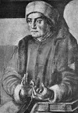

40 yaşına vardığı sırada Severinus Boethius (480-524) İtalya’nın en saygın ve en güçlü insanları arasında yer alıyordu. Pek çok Antik Yunan filozofunun eserlerini Latince’ye çevirmişti. Kendisine güvenen Kral Theodoric’in (454-526) himayesinde olması ona çok büyük bir yarar sağlamıştı.

523 yılında filozofun hayatı ani bir şekilde değişti. İhanetle suçlanarak tutuklandı. Yargılanmaksızın ölüme mahkum edildi. Kuzey İtalya’da bir hücreye atıldı ve ölümü beklemeye başladı.
Zindanda idamı beklerken yazdığı De Consolatione Philosophiae (Felsefenin Tesellisi) kitabının en önemli temalarından biri, insanın kaderinin aniden ve acımasızca değişmesidir. Kitap tanrı, kader ve erdemle ilgili temel bir felsefi eser olarak ilk bin yılın en önemli eserleri arasında yerini almıştır.
Boethius, Roma İmparatorluğu’nun 476 yılında çöküşünden kısa bir süre sonra Roma’da dünyaya geldi. Erken yaşlarda yetim kaldı. Yine de Yunan klasikleri ile ilgili iyi bir eğitim alabildi. İmparatorluğu yıkıp İtalya’nın kontrolünü ele geçiren bir Alman kabilesi olan Ostrogotların himayesi altına girdi.
Tutuklanmasından önce Boethius’un yaptığı en önemli çalışma, Platon (MÖ 429-347) ve Aristo’nun (MÖ 384-322) eserlerini tercüme etmek oldu. Boethius klasik felsefeye kendini adadığı için “Son Romalı” olarak anılıyordu. İmparatorluğun çöküşü ile birlikte felsefe, Avrupa’da hızla gözden düşmeye başlamıştı. Hıristiyanlığın yükselişi bu durumun bir diğer nedeniydi. Boethius aynı zamanda müzik teorisi, teoloji ve matematik üzerine de yazılar yazmıştı.
Boethius, kralın güvenini kazanınca Theodoric onu mülkiye sınıfının başına getirdi. Bu, o dönem için çok önemli bir mevkiydi. Ancak bir süre sonra Boethius’un onu devirmek için komplo hazırladığına rakipleri tarafından ikna edilen kral, onu tutuklattı.
Felsefenin Tesellisi’ndeki en önemli kavramlardan biri de Boethius’un “çarkıfelek” konseptidir. Buna göre tüm insanlar kaderin cilvesine tabidir. Yazar bunu dönen bir tekerlekle karşılaştırır. Kimilerinin payına servet ve mutluluk, kimilerine ise felaket düşer. Boethius’un idamının ardından kitabı, Hıristiyan dünyasında en çok okunan seküler metin haline gelecektir. Nesiller boyu Avrupalılar üzerinde büyük bir etkisi olacaktır.
Ek Bilgiler
1- Televizyon programı Çarkıfelek adını 6. yy filozofunun kaderle ilgili metaforundan almaktadır.
2- Boethius, Platon ve Aristo’nun tüm çalışmalarını çevirmeyi planlıyordu. Tutuklanması ile birlikte bu projesi yarım kaldı.
3- Yaptığı Aristo çevirileri 12. yy’a kadar filozofun batıdaki yegane Latince çevirileri olarak kaldılar. Bu tarihten sonra Avrupalılar Antik Yunan yazarlarını yeniden keşfetmeye başlayacaklardı.